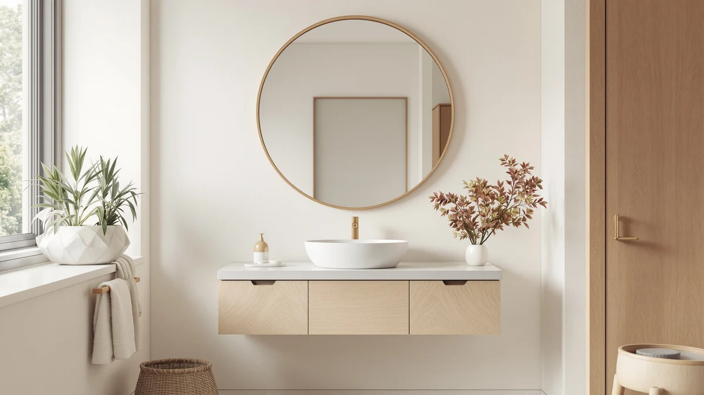

Best Smart Bathroom Mirrors of 2026: 7 Top Picks
Prices and picks verified as of September 2026. Independent, reader-supported reviews.


Quick Answer
The KAASUNES LED Medicine Cabinet 16x24inch is the best smart bathroom mirror for most people. It pairs LED lighting with hidden storage in a footprint that fits a standard single vanity, at $194.00. If you want a bigger lit surface without the cabinet, the Habison Led Mirror for Bathroom 24x32 costs $119.99.
Our pick: KAASUNES LED Medicine Cabinet 16x24inch, $194.00 Check Price on Amazon
Bottom line: our top pick is the KAASUNES LED Medicine Cabinet at $194. The best budget option is the ANYHI 20"x24" Bathroom Wall Mirror with Shelf at $79.99.
Things to Know Before You Buy
- Smart means lighting and power at this price. Between $79.99 and $299.99, smart bathroom mirrors offer LED lighting with onboard controls and, on the Mepplzian, power sockets and USB ports. Voice control and built-in displays start above this range.
- Decide on storage first. Five of our seven picks are medicine cabinets with shelving behind the glass; the Habison and ANYHI are flat wall mirrors. Cabinets cost more and sit deeper off the wall.
- Measure before you buy. Sizes here run from 16x24 inches (the KAASUNES) to a 31.5-inch square (the WisHomee black cabinet). A mirror should sit a few inches narrower than your vanity.
- Build quality is consistent across this list. All seven picks use tempered glass and aluminum, which handles daily steam better than the coated-MDF frames common on cheaper mirrors.
The best smart bathroom mirrors solve two problems at once: bad lighting over the sink and clutter on the counter. We compared seven models for this guide, from a $79.99 LED wall mirror to a $299.99 double-wide medicine cabinet, and judged each one on lighting placement, storage, build quality, and price.
Our pick is the KAASUNES LED Medicine Cabinet 16x24inch. At $194.00 it lands in the middle of the price range, and it earns that position by doing the two jobs most bathrooms need: even LED light at face height and enough hidden storage to clear your counter. Its tempered glass and aluminum construction matches models that cost $100 more.
Your bathroom may point you elsewhere. A wide double vanity calls for the 31.5-inch WisHomee black cabinet. The Mepplzian adds sockets and USB ports for $169.99, worth it if you charge a shaver or trimmer at the mirror. And the $79.99 ANYHI 20x24 gets you smart lighting for the least money. We cover each pick below, along with the flaws we found.
Why You Should Trust Us
I'm Ilane Tall, and I cover bathroom fixtures for Best Bathroom Mirrors, including our guides to LED bathroom mirrors and medicine cabinets with storage. For this smart bathroom mirror guide, we compared current models on the specs that decide daily satisfaction: light placement, storage depth, materials, and installation demands. We list prices as of July 2026, name the weaknesses of each pick, and explain in The Competition section why we cut the models that missed the list. No brand paid for placement, and no manufacturer saw this guide before publication.
How We Picked
We started with the smart bathroom mirrors and LED medicine cabinets available on Amazon in 2026 and filtered hard. Anything without a tempered glass and aluminum build came off the list, since bare glass edges and MDF backing degrade in bathroom humidity. We required a rating of 4 stars or better, a size that suits a common American vanity (16 to 32 inches wide), and a price under $300, the point where extra money starts buying gadgets rather than better light or build. That left a shortlist across three categories: compact cabinets like the KAASUNES, statement pieces like the 31.5-inch WisHomee, and flat LED mirrors like the Habison and ANYHI for buyers who do not need storage.
How We Compared
We evaluated each smart mirror the way you will live with it. We checked how each model mounts and what wiring it expects, because a cabinet that needs in-wall power costs more than its sticker price once an electrician gets involved. We compared listed dimensions against common vanity widths to flag mirrors that would overhang a sink or leave awkward wall gaps. Then we read through owner feedback on each finalist, looking for repeated complaints rather than one-off horror stories: a flaw one buyer reports is bad luck, while a flaw that shows up across dozens of reviews is a design problem. That screen shaped both our picks and the cons we list for each.
Our Picks

KAASUNES LED Medicine Cabinet 16x24inch
What we like
- 16x24 inch footprint fits above a standard single-sink vanity
- LED lighting sits at face height instead of overhead
- Cabinet shelving clears bottles and razors off the counter
- Tempered glass and aluminum handle daily steam
Flaws but not dealbreakers
- At $194.00, it costs more than a flat LED mirror of similar size
- The 16-inch width looks undersized on vanities wider than 36 inches
| Material | Tempered glass + aluminum |
| Size | 16x24inch |
The KAASUNES LED Medicine Cabinet 16x24inch is the reason this guide to the best smart bathroom mirrors starts here. The 16x24 inch cabinet covers the sweet spot: wide enough to frame your face while you shave or do makeup, compact enough to fit the wall above a single sink without crowding the light switch. Because the LED lighting comes from the mirror itself rather than a ceiling fixture behind you, it removes the shadows that make grooming harder than it should be.
Storage is the quiet advantage. A flat mirror leaves your counter doing all the work; this cabinet hides the clutter behind tempered glass, and the aluminum body holds up in a room that swings from dry to steam-soaked twice a day. At $194.00 it sits in the middle of this list, $74 above the budget Habison and $106 below the WisHomee. Two knocks: wide vanities deserve more width than 16 inches, and mounting a cabinet takes more care than hanging a flat mirror.

Janboe Oval Medicine Cabinet with
What we like
- Oval shape softens a room full of straight lines
- 28-inch height gives tall and short users the same view
- Hidden cabinet storage in a shape that reads as a decorative mirror
Flaws but not dealbreakers
- $209.99 makes it $15.99 more than our top pick
- The 16-inch width limits it to single-sink walls
| Material | Tempered glass + aluminum |
| Size | 16inch×28inch |
Most smart mirrors and lighted cabinets are rectangles, so the Janboe Oval Medicine Cabinet stands out before you switch it on. The curved frame reads as a design choice rather than a utility purchase, which matters in a powder room guests see. You still get the practical core of the category: LED lighting on the glass and shelving behind it, in a 16 by 28 inch footprint that runs taller than our top pick.
The extra 4 inches of height over the KAASUNES helps households where one person stands a head taller than the other. The tradeoff is price and width: at $209.99 you pay $15.99 more than the KAASUNES for the same tempered glass and aluminum build, and the narrow oval leaves wall showing on either side of a wide vanity. Pick it when the shape earns its keep. If your bathroom is plain and functional, the KAASUNES does the same work for less.

Black Bathroom Mirror Medicine Cabinets
What we like
- 31.5-inch square face is the largest cabinet in this guide
- Black finish matches the matte-black taps and handles in current remodels
- Storage scaled for two people sharing one bathroom
Flaws but not dealbreakers
- $299.99 is the highest price on this list
- Too wide for a standard single-vanity wall
| Material | Tempered glass + aluminum |
| Size | 31.5"L x 31.5"W |
The WisHomee entry is the statement piece of this smart bathroom mirror lineup. At 31.5 inches square it has far more glass than our top pick, and the black frame makes the cabinet a deliberate design element. If your bathroom already has matte-black taps, towel bars, or a black-framed shower door, this cabinet ties the room together in a way the frameless picks cannot.
You pay for the scale. At $299.99 this is the most expensive pick in the guide, $106 above the KAASUNES, and the 31.5-inch width demands a wide wall; above a narrow single vanity it will overhang the sink on both sides. Storage is the payoff for two people sharing a bathroom, since a cabinet this size swallows far more clutter than the compact models. Measure carefully and plan on a second set of hands for mounting, because a cabinet this heavy needs to hang from studs.

Led Mirror for Bathroom 24x32
What we like
- 32 by 24 inches of lit glass for $119.99, the most glass per dollar here
- Flat panel hangs with less fuss than a cabinet
- Same tempered glass and aluminum build as picks costing $100 more
Flaws but not dealbreakers
- No cabinet storage behind the glass
- Lacks the power sockets the Mepplzian offers
| Material | Tempered glass + aluminum |
| Size | 32"L x 24"W |
The Habison Led Mirror for Bathroom 24x32 is our budget pick because it delivers the biggest lit surface per dollar of anything we compared. For $119.99 you get a 32 by 24 inch smart mirror, more glass than our $194.00 top pick, in the same tempered glass and aluminum construction. If your vanity already has drawers to spare and you want better light for shaving or makeup, this is the shortest path to it.
The savings come from what it leaves out. There is no cabinet behind the glass, so your toothpaste and razor stay on the counter, and it has none of the power sockets that the Mepplzian builds in. As a flat panel it hangs with far less fuss than the cabinets in this guide, which makes it the model we point renters toward. Buy it for the light and the size; buy the KAASUNES if the clutter on your counter bothers you more than the shadows on your face.

Janboe LED Medicine Cabinet Bathroom
What we like
- 20 by 28 inches, 4 inches wider than the KAASUNES and the oval Janboe
- Rectangular shape suits a working family bathroom
- Same LED-plus-storage formula as our top pick, with more of both
Flaws but not dealbreakers
- $229.99 is $35.99 more than the KAASUNES
- The extra width is wasted above a narrow vanity
| Material | Tempered glass + aluminum |
| Size | 20×28inch |
The Janboe LED Medicine Cabinet Bathroom is the rectangular counterpart to the oval Janboe above, and the extra glass changes who it suits. At 20 by 28 inches it runs 4 inches wider than both the oval and the KAASUNES, enough to serve a 30-inch vanity where the 16-inch cabinets look lost. You get the same formula that puts these smart cabinets on this list: LED light on the glass, storage behind it, tempered glass and aluminum throughout.
The $229.99 price is the sticking point. It costs $35.99 more than the KAASUNES, and width is the main thing that money buys. That math works if your vanity needs the coverage and fails if it does not. Between the two Janboe cabinets, pick by wall: the oval flatters a powder room, while this rectangle earns its space above a family-bathroom vanity where storage and mirror area matter more than shape.

ANYHI 20"x24" Bathroom Wall Mirror
What we like
- $79.99 is the lowest price on this list
- Tempered glass and aluminum build matches cabinets costing three times as much
- Compact 24 by 20 inch panel suits small walls
Flaws but not dealbreakers
- Smallest mirror in the guide
- No storage and no power sockets
| Material | Tempered glass + aluminum |
| Size | 24"L x 20"W |
At $79.99, the ANYHI 20x24 Bathroom Wall Mirror is the least expensive way into a smart bathroom mirror, and it makes fewer compromises than the price suggests. The 24 by 20 inch panel uses the same tempered glass and aluminum build as cabinets costing three times as much, and it carries the same 4-star rating as the rest of this list. In a rental or a first apartment, it upgrades the light over your sink for the cost of a week of groceries.
Know what you give up. You lose storage and sockets, and the 24 by 20 inch panel is the smallest in the guide, better suited to a compact vanity than a wide family bathroom. None of that counts as a flaw at this price; it is the tradeoff you accept. We recommend it to renters who cannot modify wiring and to anyone testing whether a lighted smart mirror matters to them before spending $200 on a cabinet.

Mepplzian Lighted Medicine Cabinet with
What we like
- Built-in power sockets and USB ports, the only pick here with either
- 24 by 30 inch cabinet gives more height than our top pick
- $169.99 undercuts the KAASUNES by $24.01
Flaws but not dealbreakers
- Live outlets inside the cabinet call for proper in-wall wiring
- Less established brand than the Janboe cabinets on this list
| Material | Tempered glass + aluminum |
| Size | 24x30-Sockets & USB |
The Mepplzian Lighted Medicine Cabinet is the only pick in this smart bathroom mirror guide with power built in: sockets and USB ports live inside the 24 by 30 inch cabinet, so your shaver, trimmer, or toothbrush charges behind the mirror instead of hogging the counter outlet. That single feature reorganizes a morning routine. Cords disappear from the counter, and the outlet by the sink goes back to the hair dryer.
The rest of the package holds up. At $169.99 it undercuts the KAASUNES by $24.01 while adding the power features and 6 more inches of height, in the same tempered glass and aluminum construction. The caveat is installation: a cabinet with live outlets inside wants proper wiring, so plan for an electrician if your mirror wall lacks power. If you charge devices in the bathroom, we would choose this over our own top pick.
Quick Comparison
| Product | Material | Price | Rating | Best for | Get it |
|---|---|---|---|---|---|
| KAASUNES LED Medicine Cabinet 16x24inch | Tempered glass + aluminum | $194.00 | 4 | Most people with a single vanity | View on Amazon → |
| Janboe Oval Medicine Cabinet with | Tempered glass + aluminum | $209.99 | 4 | Design-led powder rooms | View on Amazon → |
| Black Bathroom Mirror Medicine Cabinets | Tempered glass + aluminum | $299.99 | 4 | Double vanities, black fixtures | View on Amazon → |
| Led Mirror for Bathroom 24x32 | Tempered glass + aluminum | $119.99 | 4 | A big smart mirror on a budget | View on Amazon → |
| Janboe LED Medicine Cabinet Bathroom | Tempered glass + aluminum | $229.99 | 4 | Vanities around 30 inches | View on Amazon → |
| ANYHI 20"x24" Bathroom Wall Mirror | Tempered glass + aluminum | $79.99 | 4 | Small bathrooms and rentals | View on Amazon → |
| Mepplzian Lighted Medicine Cabinet with | Tempered glass + aluminum | $169.99 | 4 | Shaving and charging at the mirror | View on Amazon → |
Do smart bathroom mirrors need Wi-Fi or a touchscreen?
No.
Can I install a smart mirror or LED medicine cabinet myself?
Flat LED mirrors like the Habison and ANYHI hang much like a standard mirror, so most people can manage the job in an afternoon.
The Competition
We looked at more smart bathroom mirrors than the seven above; the rest missed the cut for the reasons below.